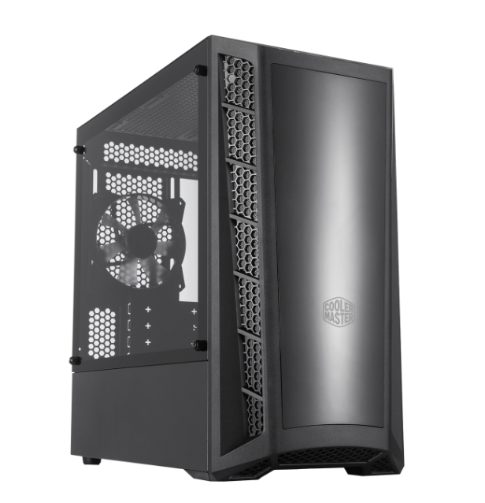
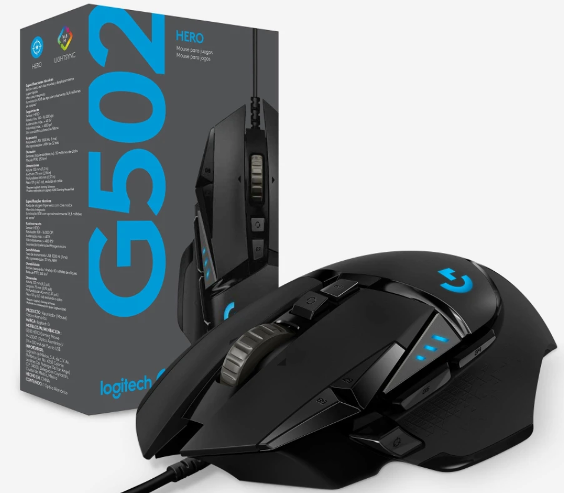
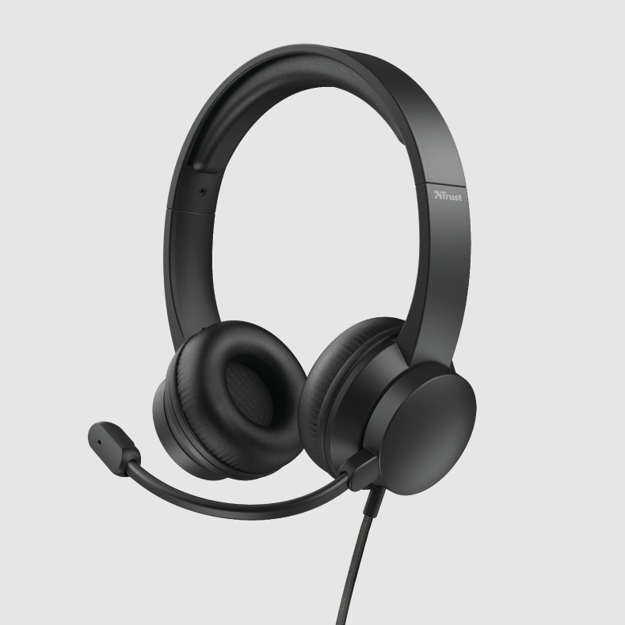

Nuevos Ingresos
Ultimos productos destacados
Gabinete MasterBox LB320L
El Master Box MB320L es un gabinete de PC Micro-ATX con ventilacion de malla de panal a ambos lados del panel frontal DarkMirror. El panel frontal DarkMirror se ahuma un tono mas oscuero para agudizar el constante de los ventiladores opcionales montados detras de el, destacando sus mejores carecteristicas. Un alto potencial para construcciones refrigeradas por aire y refrigeradas por líquido comprende ventilación frontal, superior y trasera con la posibilidad de montar ventiladores y radiadores adicionales. Manteniendo los principios galardonados de la serie MB, la versatilidad se combina con la presentación para garantizar que cualquier sistema de juego construido dentro del MasterBox MB320L se vea tan bien como funciona.
Mouse Logitech G502 HERO
G502 HERO dispone de un sensor óptico avanzado para máxima precisión de seguimiento, iluminación RGB personalizada, perfiles de juego personalizados, de 200 a 25.600 dpi y pesas reposicionables. HERO 25K es nuestro sensor para juegos con una precisión de próxima generación y una arquitectura específica. Con el procesamiento de frecuencia de cuadro más rápido hasta la fecha, HERO es capaz de más de 400 ips y 100 - 25.600 dpi, sin suavizado, filtrado ni aceleración. HERO 25K ofrece precisión al más alto nivel competitivo y máxima uniformidad de respuesta. Asegúrate de personalizar y ajustar tu configuración de dpi con Logitech G HUB.
Auriculares Rydo Trust
Vivimos en un mundo en línea, lo que significa que las reuniones también se están trasladando a Internet. Los auriculares Rydo de Trust son el mejor aliado. Este juego de auriculares está diseñado para que pueda usarse cómodamente, con un micrófono ajustable que facilita la comunicación. De uso sencillo y con una calidad de sonido excelente; son adecuados para todas las aplicaciones de chat (de vídeo), como Skype, Teams o Zoom.
